Angeles Sisig
A sizzling pork dish that originated in Angeles.

Angeles Bringhe
A coconut milk-based version of paella.
Apalit Metalworks / Blacksmithing
Apalit is known for its traditional metal industry, especially in barrio Canlapan.
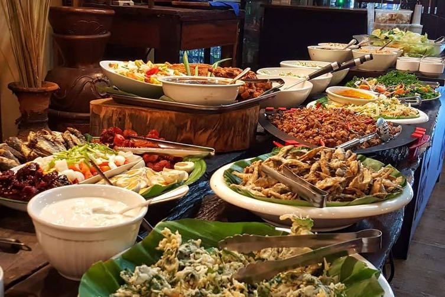
Apalit Native Delicacies
Homemade kakanin and other Kapampangan specialties.
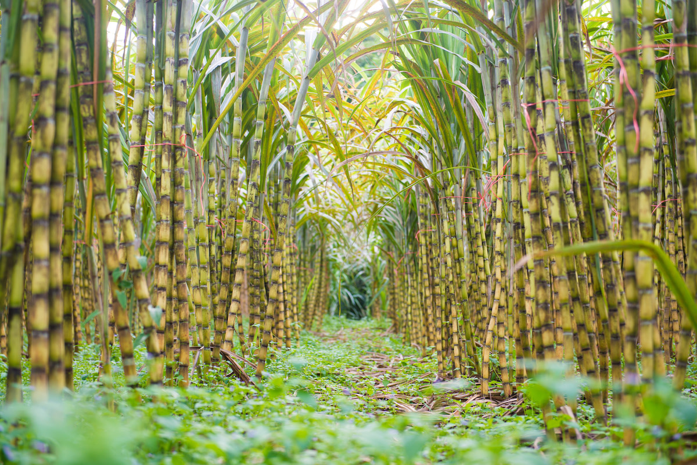
Arayat Sugar cane products
Since sugar cane grows locally, you'll find products tied to this trade.
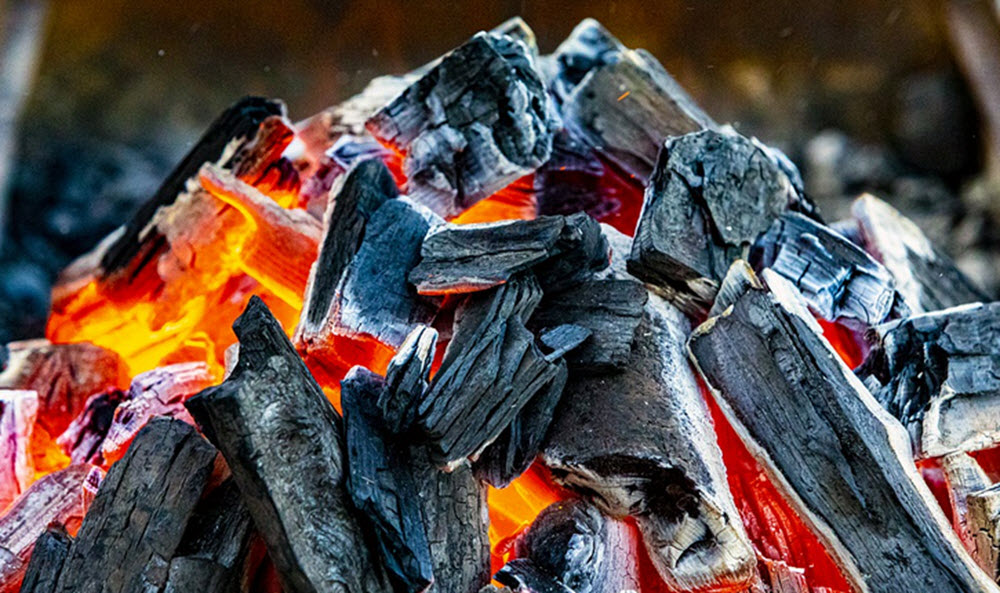
Arayat Firewood & charcoal
Historically a local forest byproduct.

Bacolor Turrones de Casoy
A popular Kapampangan sweet made with cashew nuts, popular for pasalubong.
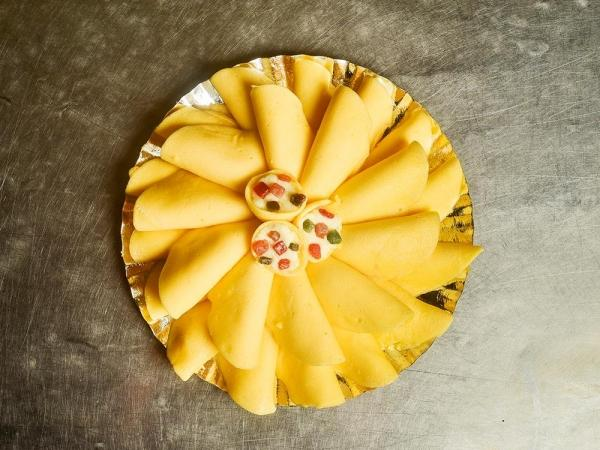
Bacolor Plantanillas
A delicious heritage dessert featuring egg crepes filled with creamy pastillas.

Candaba Vegetables
Eggplant, okra, and leafy greens grown in swamp and farm areas.

Candaba Duck and poultry products
Duck meat, balut, salted eggs, and chicken from local farms.
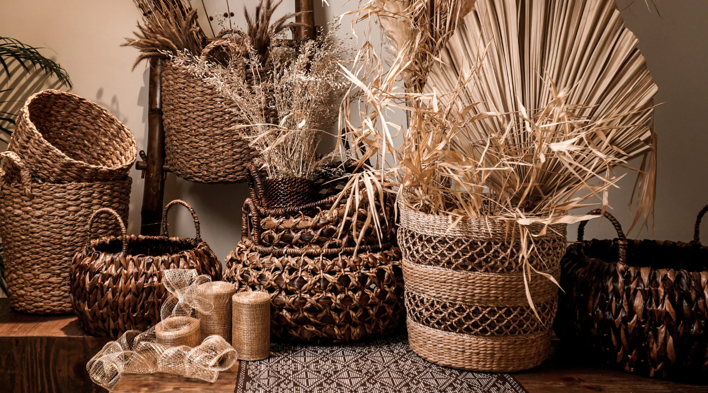
Floridablanca Handmade Crafts
Simple locally made products that reflect the creativity of the community.
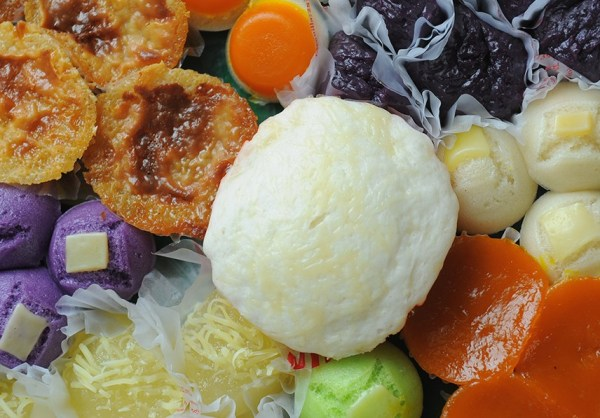
Floridablanca Native Delicacies
Rice-based snacks like kakanin, often homemade and sold in markets.

Guagua Betis Woodcarvings
Handcrafted religious statues, decorative pieces, and furniture made by skilled artisans in the Betis district.

Guagua Chicharon
Crispy, freshly fried pork cracklings sold in local markets and roadside stalls.

Lubao Sampaguita Flower Products
Lubao is renowned for the fragrant sampaguita flower, and you can find sampaguita garlands, bouquets, perfumes, and souvenir accessories.

Lubao Handmade Bamboo Crafts
Artisans produce bamboo trays, bags, decor, and eco-friendly handicrafts that reflect the town's connection to nature.
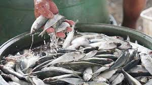
Macabebe Fishing Products
Fresh fish, shrimp, and crabs are the main livelihood products.
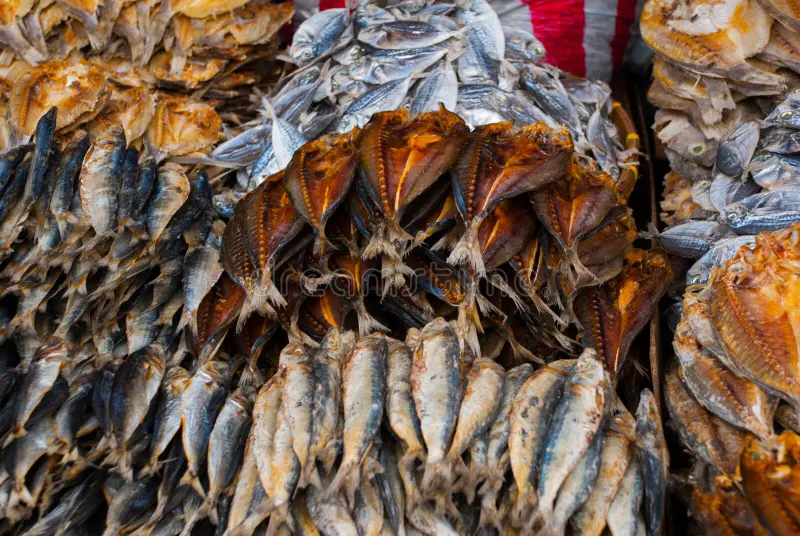
Macabebe Dried Fish
Sun-dried fish products commonly sold in local markets.

Mabalacat Turrones de Casoy
A popular delicacy in Mabalacat, turrones de casoy is made of cashew nuts wrapped in wafer and caramelized sugar. It is commonly sold in pasalubong shops around Clark and Mabalacat and is a favorite snack for tourists bringing home something local.

Mabalacat Buro
Buro is a traditional Kapampangan delicacy found in Mabalacat homes and local eateries. It is made by fermenting rice with small fish or shrimp, creating a strong salty-sour flavor. It is usually eaten with fried fish or vegetables and is a common dish in Kapampangan meals.
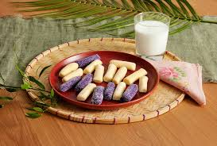
Magalang Pastillas de Leche
Sweet, creamy carabao-milk confections the town is known for.
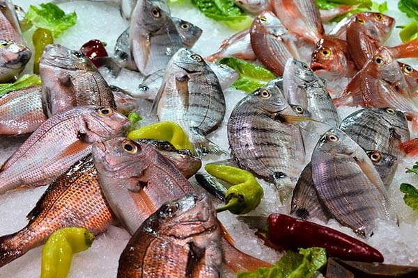
Masantol Fresh Seafood
Fish, crabs, and shrimp caught daily from rivers and coastal areas; this is the main source of food and income of the people.

Masantol Bagoong
A salty paste made by fermenting fish or shrimp; it is used as a condiment and adds strong flavor to many Filipino dishes.

Mexico Suman sa Lihia
Sticky rice soaked in lye water, wrapped in banana leaves, and steamed; popular in Brgy. San Juan and Brgy. San Isidro.
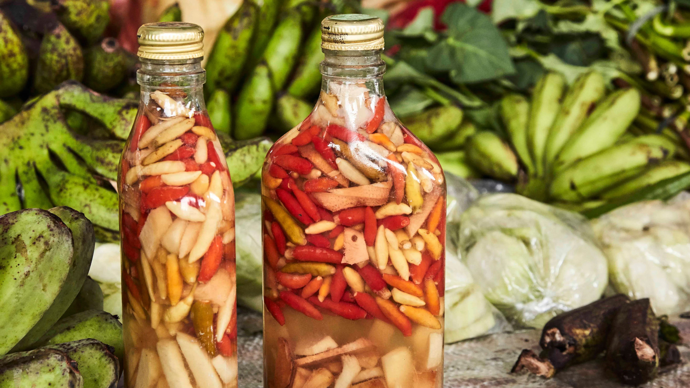
Mexico Vinegar with Chili
Locally produced, used for cooking or as dipping sauce; popular during festivals.

Minalin Fresh Eggs and Poultry Products
Minalin is famous as the "Egg Basket of Central Luzon," producing millions of eggs daily.
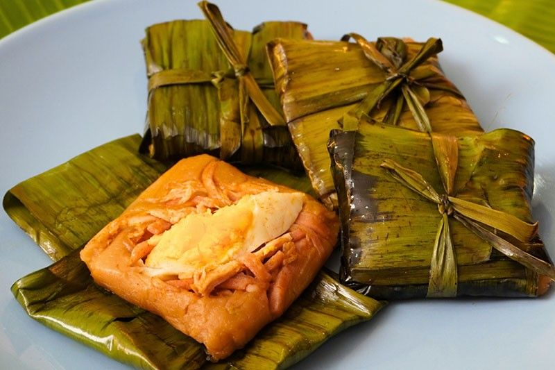
Porac Tamales Kapampangan
A savory rice dish made with ground rice, chicken, peanuts, and banana leaves; known for its rich, slightly oily flavor.
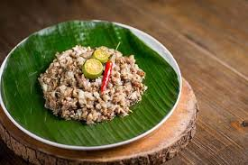
Porac Sisig
A famous Kapampangan dish of chopped pork, onions, and calamansi, often served sizzling.

San Fernando Parol (Giant Lanterns)
The parol, especially the large handcrafted lanterns featured in the Giant Lantern Festival, is the most iconic product of San Fernando. These lanterns symbolize Filipino Christmas traditions and highlight the craftsmanship of local artisans.

San Fernando's Tibok-tibok
A traditional Kapampangan dessert made from carabao's milk, known for its smooth texture and rich flavor, representing the region's strong dairy-based culinary heritage.

San Luis Rice (Palay)
The dominant agricultural crop of San Luis, grown in irrigated fields across the municipality and supplied to markets in Pampanga and nearby provinces.
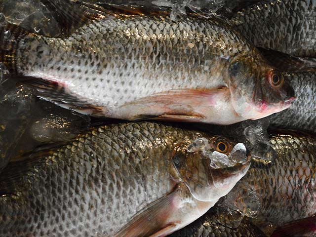
San Luis Freshwater Fish
Tilapia and hito (catfish) harvested from the municipality's 444 hectares of inland fishponds, sold fresh in local markets.
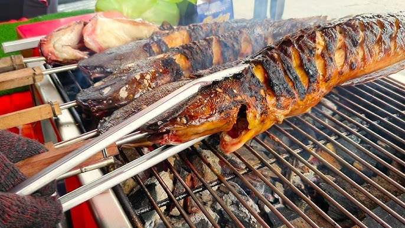
San Simon Inasal na Hito (Grilled Catfish)
Fresh catfish marinated and grilled, common in riverside areas.
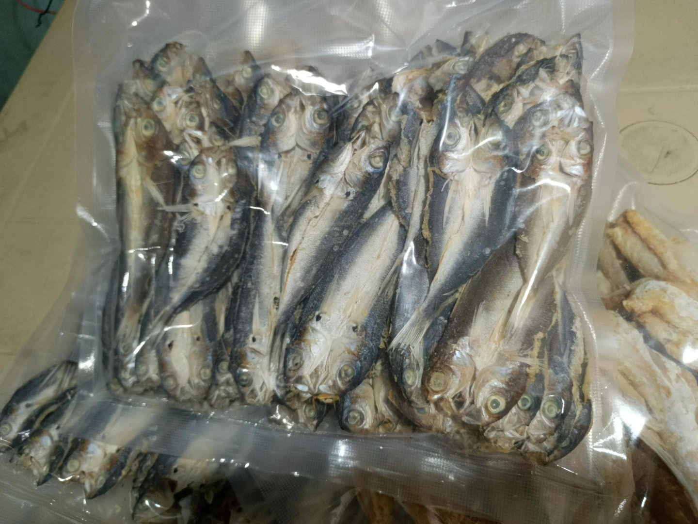
San Simon Daing na Bangus
Milkfish marinated in vinegar and garlic, then fried or dried.
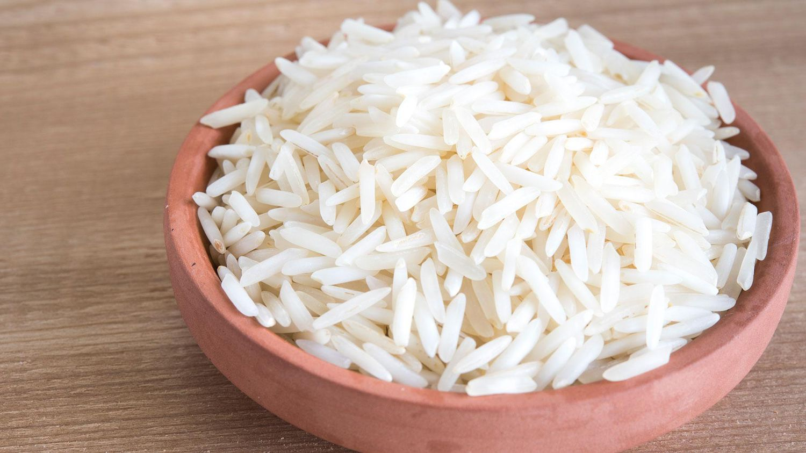
Santa Ana Rice (Palay)
Main product of Sta. Ana, includes common varieties like regular white rice and long-grain rice.

Santa Ana Corn (Mais)
Used for feeds and local consumption.
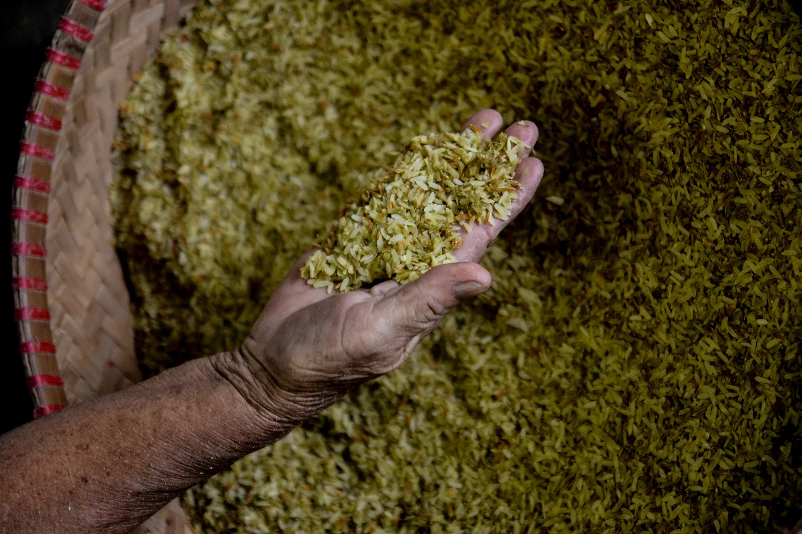
Santa Rita Duman
A seasonal, treasured delicacy made from pounded young glutinous rice, known for its green hue, nuttiness, and soft texture.
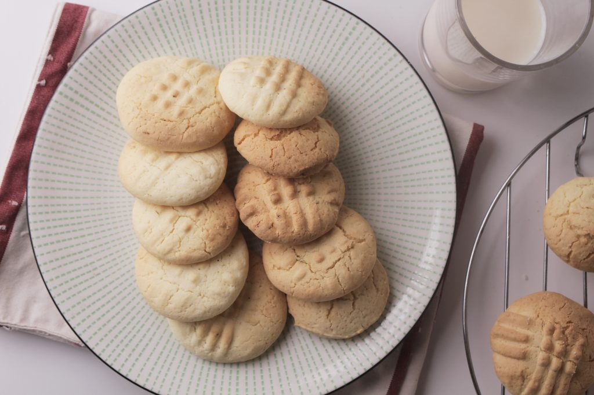
Santa Rita Uraro (Arrowroot Cookies)
Melt-in-your-mouth biscuits that are powdery in texture, often shaped as flowers.
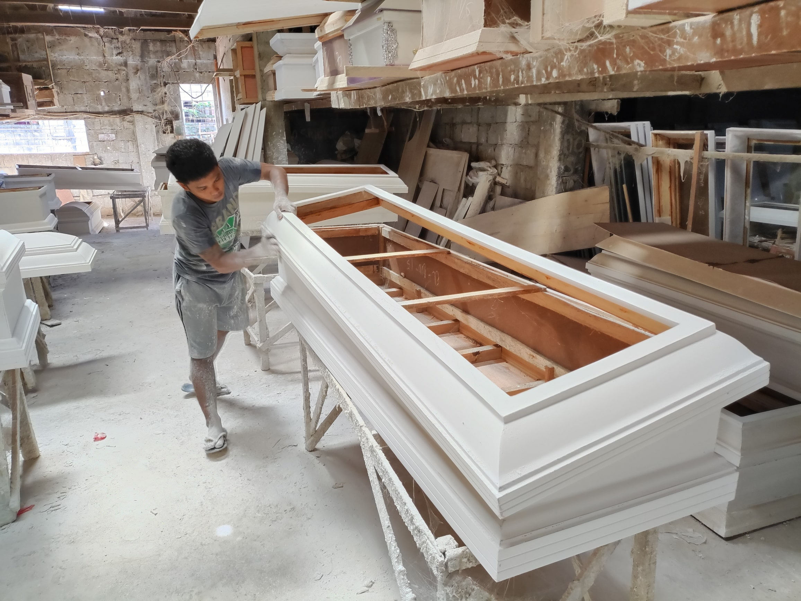
Santo Tomas Caskets and Coffins
Santo Tomas supplies approximately 70% of the caskets used in the Philippines. The industry is concentrated among family-owned workshops producing various designs using wood, metal, and fabric materials.
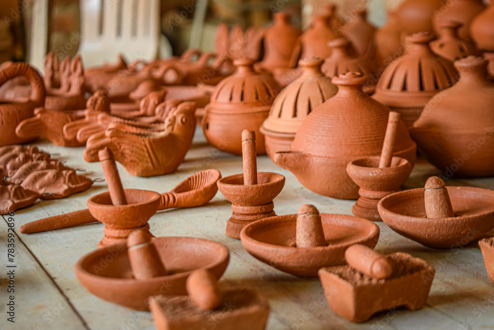
Santo Tomas Red Clay Pottery
The town's signature craft product, featuring vases, fountains, planters, and decorative earthenware made from locally sourced red clay using traditional firing techniques.

Sasmuan Rice and Vegetables
Agriculture-based products.

Sasmuan Fish and seafood
Main livelihood products.